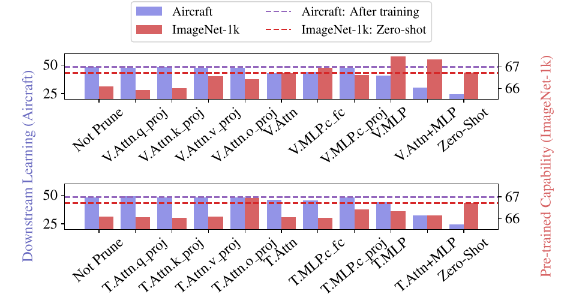
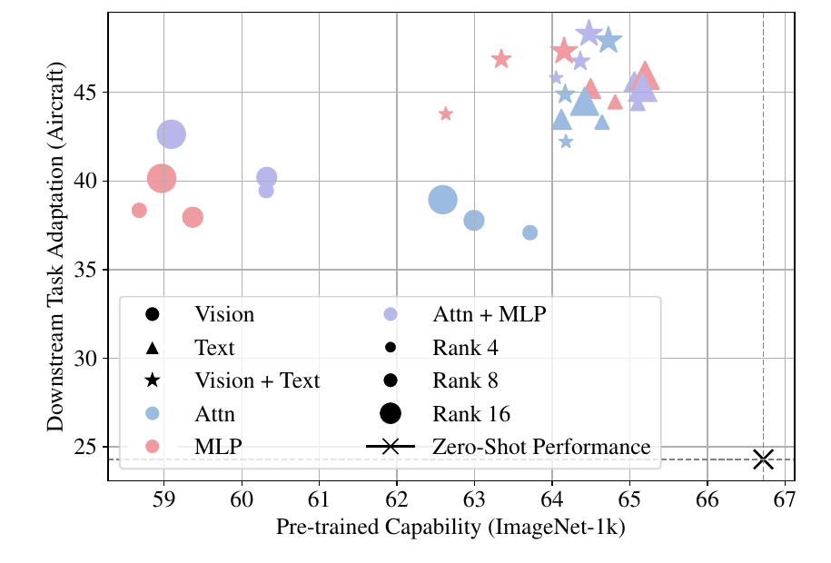
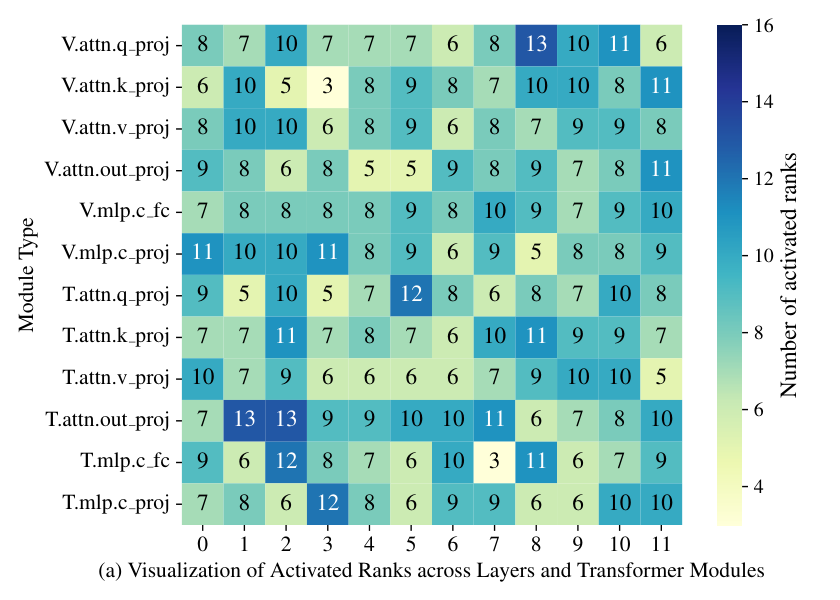
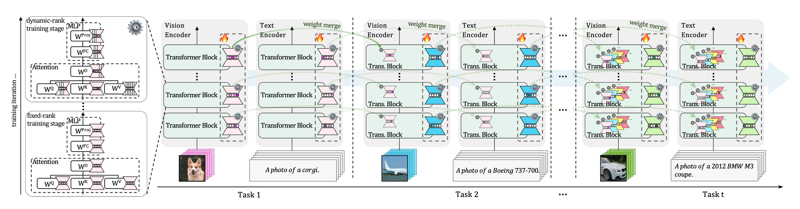

The central tension in continual learning (CL) is the trade-off between plasticity (acquiring new knowledge) and stability (retaining prior knowledge). We study how a pre-trained backbone can be continually updated to absorb new knowledge while preserving existing capabilities, via capacity control: regulating the effective rank of each parameter update, a per-step quantity directly controllable inside a LoRA update.
A controlled probe of LoRA rank and placement across modules and tasks reveals a consistent trade-off, with a moderate-rank sweet spot that varies by placement and task, leaving no universally optimal fixed rank; a formal bound links forgetting to update rank.
Building on these findings, we propose Continual Dynamic Rank-Selective LoRA (CoDyRA), which jointly trains each LoRA update with rank minimization via sparsity-promoting regularization on per-component importance weights. The supervised objective drives plasticity; rank minimization regularizes forgetting. We show that rank minimization serves as an implicit forgetting regularizer in the CL regime, protecting general capability and prior-task knowledge simultaneously by controlling forgetting against the current model state. Across MTIL, X-TAIL, and TRACE (CLIP, LLaMA, Gemma), CoDyRA outperforms prior CL methods on new-knowledge learning and forgetting, achieving a strong plasticity–stability balance.
No past data, task IDs, or per-task modules — only the current task and the current model state.
Rank-pruned updates merge into the backbone after each task — architecture and parameter count unchanged.
A single rank-based criterion drives current-task learning while protecting general capability and prior-task knowledge.
Before proposing a method, we run a controlled probe: train CLIP with LoRA at different placements and ranks, and measure both new-task adaptation (plasticity) and retention of pre-trained capability (stability). Rank and placement turn out to be the knobs that trade one against the other. Each takeaway below is stacked with its evidence.

LoRA placement is a plasticity–stability lever: no single placement or rank simultaneously optimizes both across tasks.

Rank governs the balance: higher rank favors plasticity, lower rank favors stability. For a given level of adaptation, forgetting is minimized at a moderate-rank sweet spot.

The sweet-spot rank is not universal: its location varies systematically by module and by downstream task — so the right method must allocate rank adaptively.
CoDyRA is a capacity-controlled method: it makes the per-location rank a learnable, task-adaptive quantity and shrinks it with a sparsity penalty — distinct from model complementation (freeze the backbone, add external modules) and reference-constrained methods (constrain each update with stored data or prior-task projections).

For module m at task t, the update is a sum of rank-1 components, each scaled by a learnable importance weight wi; the number of non-zero weights upper-bounds the effective rank:
The objective adds an \(\ell_1\) penalty on the importance weights — the supervised term drives plasticity, the sparsity term minimizes rank and regularizes forgetting:
Because \(\ell_1\) is non-smooth, weights take a proximal (soft-thresholding) step after each gradient step, with a threshold \(\kappa_t\) ramping from zero to \(\kappa_{\max}=0.005\):
A first-order bound on forgetting \(F(\theta_t)\) grows with the update size, itself bounded by its rank \(\rho\) (Prop. 1):
Both terms shrink as \(\rho\) decreases, and \(\Delta\mathbf{W}\) occupies a subspace of dimension at most \(\rho\). So rank minimization behaves as an implicit forgetting regularizer — tightening the bound along both magnitude and subspace dimension, protecting pre-trained and prior-task knowledge alike.
This is not just theory. By minimizing rank, CoDyRA directly minimizes the update magnitude \(\lVert\Delta\mathbf{W}\rVert_F\): per task it produces the smallest update — below even rank-1 LoRA — despite a moderate effective rank, and over the stream the cumulative drift \(\lVert\theta_t-\theta_0\rVert_F\) stays low while fixed-rank LoRA blows up near-linearly. A smaller parameter shift is exactly the mechanism the bound predicts for less forgetting — direct evidence that rank minimization acts as the regularizer.
Cumulative parameter shift ‖θt−θ0‖F
Table 5 — drift over the 10-task stream.
Per-task update magnitude ‖ΔW‖F
Table 6 — magnitude vs. effective rank ρ.
Per-domain Transfer / Average / Last accuracy (%), grouped by method family. CoDyRA (capacity-controlled) is the only method that surpasses the zero-shot Transfer ceiling (70.1) while also leading on Last (78.0).
| Method | Aircraft | Caltech | CIFAR100 | DTD | EuroSAT | Flowers | Food | MNIST | OxPet | Cars | SUN397 | Avg |
|---|---|---|---|---|---|---|---|---|---|---|---|---|
| Transfer | ||||||||||||
| CLIP zero-shot reference | ||||||||||||
| Zero-shot | – | 88.4 | 68.2 | 44.6 | 54.9 | 71.0 | 88.5 | 59.4 | 89.0 | 64.7 | 65.2 | 69.4 |
| Model complementation | ||||||||||||
| MoE-Adapter† | – | 87.9 | 68.2 | 44.1 | 48.1 | 64.7 | 88.8 | 69.0 | 89.1 | 64.5 | 65.1 | 68.9 |
| RAIL-Primal† | – | 88.4 | 68.2 | 44.6 | 54.9 | 71.0 | 88.5 | 59.4 | 89.0 | 64.7 | 65.2 | 69.4 |
| Model continually learned | ||||||||||||
| reference-constrained | ||||||||||||
| LwF | – | 72.1 | 49.2 | 35.9 | 44.5 | 41.1 | 66.6 | 50.5 | 69.0 | 19.0 | 51.7 | 50.0 |
| LwF-VR | – | 82.2 | 62.5 | 40.1 | 40.1 | 56.3 | 80.0 | 60.9 | 77.6 | 40.5 | 60.8 | 60.1 |
| WiSE-FT | – | 77.6 | 60.0 | 41.3 | 39.4 | 53.0 | 76.6 | 58.1 | 75.5 | 37.3 | 58.2 | 57.7 |
| ZSCL | – | 84.0 | 68.1 | 44.8 | 46.8 | 63.6 | 84.9 | 61.4 | 81.4 | 55.5 | 62.2 | 65.3 |
| capacity-controlled (ours) | ||||||||||||
| CoDyRA | – | 92.4 | 68.4 | 45.8 | 54.5 | 69.6 | 87.4 | 65.2 | 88.5 | 64.2 | 64.5 | 70.1 |
| Average | ||||||||||||
| Model complementation | ||||||||||||
| MoE-Adapter† | 30.0 | 89.6 | 73.9 | 58.7 | 69.3 | 79.3 | 88.1 | 76.5 | 89.1 | 65.3 | 65.8 | 71.4 |
| RAIL-Primal† | 32.9 | 94.5 | 69.9 | 58.1 | 71.8 | 84.4 | 88.5 | 70.4 | 89.0 | 66.1 | 65.7 | 71.9 |
| Model continually learned | ||||||||||||
| reference-constrained | ||||||||||||
| LwF | 23.5 | 77.4 | 43.5 | 41.7 | 43.5 | 52.2 | 54.6 | 63.4 | 68.0 | 21.3 | 52.6 | 49.2 |
| LwF-VR | 24.9 | 89.1 | 64.2 | 53.4 | 54.3 | 70.8 | 79.2 | 66.5 | 79.2 | 44.1 | 61.6 | 62.5 |
| WiSE-FT | 32.0 | 87.7 | 61.0 | 55.8 | 68.1 | 69.3 | 76.8 | 71.5 | 77.6 | 42.0 | 59.3 | 63.7 |
| ZSCL | 28.2 | 88.6 | 66.5 | 53.5 | 56.3 | 73.4 | 83.1 | 56.4 | 82.4 | 57.5 | 62.9 | 64.4 |
| capacity-controlled (ours) | ||||||||||||
| CoDyRA | 34.6 | 95.8 | 73.9 | 60.0 | 77.1 | 81.3 | 86.6 | 75.9 | 89.9 | 66.1 | 65.3 | 73.3 |
| Last | ||||||||||||
| Model complementation | ||||||||||||
| MoE-Adapter† | 30.1 | 89.3 | 74.9 | 64.0 | 82.3 | 89.4 | 87.1 | 89.0 | 89.1 | 69.5 | 72.5 | 76.1 |
| RAIL-Primal† | 32.9 | 95.1 | 70.3 | 63.2 | 81.5 | 95.6 | 88.5 | 89.7 | 89.0 | 72.5 | 71.0 | 77.2 |
| Model continually learned | ||||||||||||
| reference-constrained | ||||||||||||
| LwF | 22.1 | 58.2 | 17.9 | 32.1 | 28.1 | 66.7 | 46.0 | 84.3 | 64.1 | 31.5 | 60.1 | 46.5 |
| LwF-VR | 22.9 | 89.8 | 59.3 | 57.1 | 57.6 | 79.2 | 78.3 | 77.7 | 83.6 | 60.1 | 69.8 | 66.9 |
| WiSE-FT | 30.8 | 88.9 | 59.6 | 60.3 | 80.9 | 81.7 | 77.1 | 94.9 | 83.2 | 62.8 | 70.0 | 71.9 |
| ZSCL | 26.8 | 88.5 | 63.7 | 55.7 | 60.2 | 82.1 | 82.6 | 58.6 | 85.9 | 66.7 | 70.4 | 67.4 |
| capacity-controlled (ours) | ||||||||||||
| CoDyRA | 31.6 | 95.5 | 72.8 | 63.5 | 85.0 | 89.7 | 85.0 | 94.7 | 93.2 | 73.6 | 73.0 | 78.0 |
Transfer / Average / Last accuracy (%) on the 10-domain X-TAIL benchmark (per-domain tables in the paper).
| Method | Transfer | Average | Last |
|---|---|---|---|
| Model complementation | |||
| MoE-Adapter | 56.0 | 63.0 | 70.5 |
| RAIL-Primal | 62.4 | 70.7 | 79.1 |
| Model continually learned | |||
| reference-constrained | |||
| ZSCL | 59.0 | 60.0 | 63.4 |
| iCaRL | 61.7 | 61.0 | 64.0 |
| naive LoRA | |||
| LoRA (r=16) | 61.8 | 60.5 | 59.4 |
| capacity-controlled (ours) | |||
| CoDyRA | 63.2 | 71.3 | 79.2 |
Overall Performance (OP, ↑) and Forgetting (Fgt, ↓) over 8 sequential tasks (mean of 3 runs; ±std in the paper). Across all three backbones CoDyRA gives the highest OP and the lowest forgetting.
| Method | LLaMA-2-7B-Chat | Gemma-2B-it | LLaMA-3-1B-Instruct | |||
|---|---|---|---|---|---|---|
| OP ↑ | Fgt ↓ | OP ↑ | Fgt ↓ | OP ↑ | Fgt ↓ | |
| no training | ||||||
| FIX (ICL) | 38.94 | – | 32.30 | – | 31.16 | – |
| Model complementation | ||||||
| auxiliary modules | ||||||
| L2P | 36.23 | 8.25 | 31.14 | 15.77 | 29.38 | 13.57 |
| DualPrompt | 37.69 | 8.03 | 32.42 | 14.25 | 30.76 | 11.34 |
| Model continually learned | ||||||
| reference-constrained | ||||||
| HiDeLoRA | 41.60 | 7.12 | 33.25 | 13.66 | 33.73 | 12.36 |
| O-LoRA | 42.78 | 7.16 | 33.73 | 12.36 | 32.94 | 12.89 |
| TreeLoRA | 43.52 | 3.46 | 33.41 | 8.50 | 36.14 | 7.36 |
| OGD | 42.09 | 8.06 | 32.85 | 12.27 | 30.12 | 15.20 |
| EWC | 42.36 | 5.97 | 28.35 | 16.96 | 31.96 | 11.62 |
| GEM | 40.08 | 6.77 | 26.48 | 18.25 | 32.19 | 10.74 |
| naive LoRA | ||||||
| SeqLoRA | 34.30 | 18.50 | 31.89 | 15.28 | 29.73 | 17.03 |
| capacity-controlled (ours) | ||||||
| CoDyRA | 43.82 | 3.25 | 33.96 | 7.94 | 37.46 | 5.11 |
CoDyRA trains the fewest parameters and, because the pruned update merges into the backbone, adds no inference-time parameters or memory — while attaining the lowest Forgetting on X-TAIL.
| Method | Train. params | Add. inf. params |
|---|---|---|
| LwF | 129.6M | None |
| ZSCL | 129.6M | None |
| MoE-Adapters | 59.8M | 13.35M |
| RAIL | N/A | 24.18M / 9.01M |
| CoDyRA | 4.4M | None |
Computation cost on CLIP CL (Table 3).
| Method | Forgetting ↓ |
|---|---|
| ZSCL | 8.78 |
| MoE-Adapter | 5.43 |
| InfLoRA | 3.12 |
| LoRA (r=4) | 13.94 |
| LoRA (r=16) | 14.86 |
| CoDyRA | 1.87 |
Forgetting on X-TAIL (Table 4); lower is better.
@inproceedings{lu2026take,
title = {{Take Only What You Need: Rank Minimization as an Implicit Forgetting Regularizer in Continual Learning}},
author = {{Lu, Haodong and Zhao, Chongyang and Xue, Minhui and Yao, Lina and Moore, Kristen and Gong, Dong}},
booktitle = {{Findings of the Association for Computational Linguistics: EMNLP 2026}},
year = {{2026}},
url = {{https://openreview.net/forum?id=TmGgXWnedq}}
}